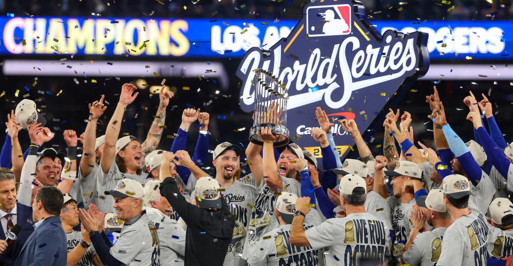
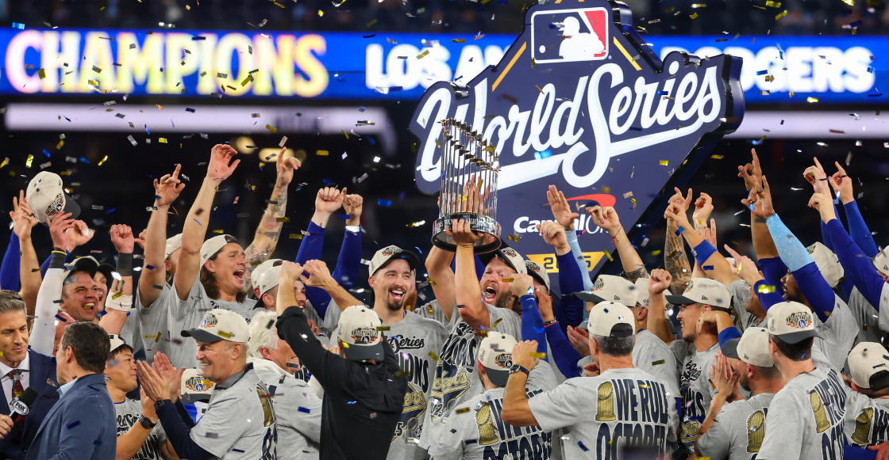

Serie Mundial 2025
La gran final del béisbol enfrentó a los Los Angeles Dodgers y los Toronto Blue Jays. Después de siete emocionantes juegos, los Dodgers se coronaron campeones al ganar la serie 4-3, con un triunfo épico en el juego 7.
El último encuentro, disputado en el Dodger Stadium, fue un espectáculo: jonrones, estrategias y nervios hasta el final. Los fanáticos no podían creer la intensidad del duelo, que terminó 5-4 en extra innings a favor de Los Ángeles.
La Serie Mundial 2025 quedará en la historia como una de las más emocionantes. Los Dodgers levantaron el trofeo con orgullo, celebrando un título merecido tras una temporada llena de entrega, pasión y talento.

 
